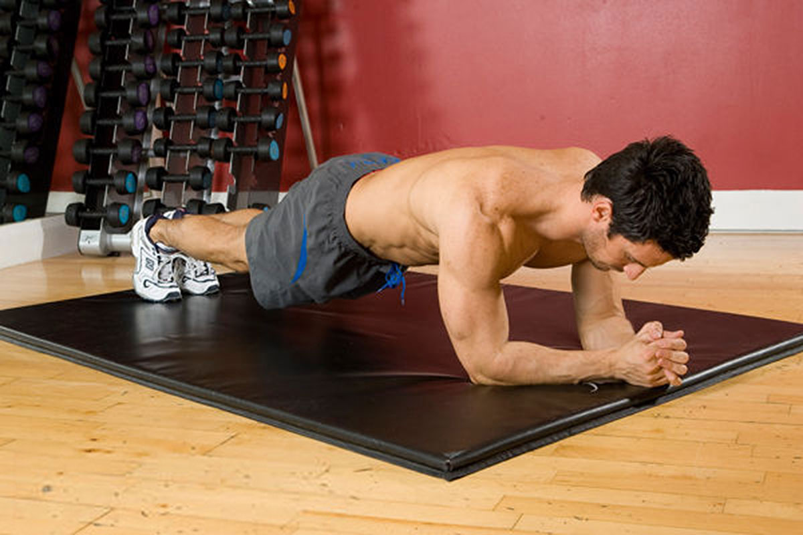

Комплекс упражнений и отжимания
ОТЖИМАНИЯ
Начните с отжиманий для женщин. Когда вы сможете сделать восемнадцать отжиманий, переходите к классическому варианту упражнения.
ИСХОДНОЕ ПОЛОЖЕНИЕ. Встаньте на колени и скрестите щиколотки. Обопритесь руками перед собой. Сожмите ладони в кулаки и поставьте их чуть шире плеч. Напрягите мышцы живота, вытяните шею, расположите подбородок прямо.
Убедитесь, что вы не:
- прогибаете спину
- расслабляете мышцы живота
ДВИЖЕНИЕ
- Согните локти и опустите грудь по направлению к коврику. Спина, шея и голова должны образовывать прямую линию
- На некоторое время задержитесь в этом положении, затем медленно вернитесь в исходное положение
- Считайте отжимания вслух и повторите упражнение шесть раз. Постепенно доведите количество отжиманий до восемнадцати, каждый раз добавляя по шесть упражнений
КЛАССИЧЕСКИЕ ОТЖИМАНИЯ
Упражнение ТРЕХШАГОВАЯ СТАБИЛИЗАЦИЯ ТАЗА (усложненный вариант)
Для начала возьмите отягощение для щиколоток весом в полтора килограмма. Через три недели увеличьте вес до двух килограммов, но сделать это можно только в том случае, если вы чувствуете себя готовой. Три недели пользуйтесь двухкилограммовыми отягощениями, а затем попробуйте выполнить упражнение с отягощениями в два с половиной килограмма.
Все три этапа данного упражнения выполняются сначала на одном боку, затем на другом.
Шаг первый: ПОВОРОТ И РАСТЯЖКА ГОЛЕНИ
ИСХОДНОЕ ПОЛОЖЕНИЕ. Закрепите на щиколотках отягощения. Лягте на левый бок, обопритесь на локоть. Поднимите верхнюю часть туловища, напрягите мышцы живота и перенесите вес тела на левое предплечье, опирающееся на коврик. Кулак левой руки также должен опираться на коврик. Выпрямите ноги, положите их друг на друга, направьте ноги под углом 45 градусов к торсу.
Положите правую ладонь на коврик перед собой, прижмите правое предплечье к напряженным мышцам живота. Локоть правой руки должен быть прижат к лобковой кости, чтобы в ходе выполнения упражнения вы не перекатились вперед (1).
Упражнение РУСАЛКА-2
Примечание. Дыхание в ходе этого упражнения будет несколько отличаться от других упражнений.
ИСХОДНОЕ ПОЛОЖЕНИЕ. Лягте на спину, поднимите ноги перпендикулярно полу, колени слегка согните. Пятки должны касаться друг друга, а пальцы ног должны быть разведены в стороны. Руки лежат на коврике ладонями вверх. Напрягите мышцы живота, вытяните шею и прижмите спину к коврику (1).